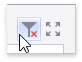

Master Filtering
The Dashboard allows you to use any data-aware dashboard item as a filter for the entire dashboard (Master Filter). You can select elements in a Master Filter item (chart bars, pie segments, grid records, etc.) to filter data in the rest of the dashboard by the selected values.

Master Filtering Modes
The Master Filter item supports two selection modes.
Multiple
Allows you to select multiple elements in the Master Filter item.
To clear the selection in the Master Filter item, use the Clear Master Filter button in the dashboard item's caption.

Single
Allows you to select only one element in the Master Filter item. When this mode is enabled, the default selection will be set to a Master Filter element. You can change this selection, but cannot clear it.
To learn how to filter dashboard data via a specific dashboard item, refer to the documentation for this item in the Dashboard Items section.